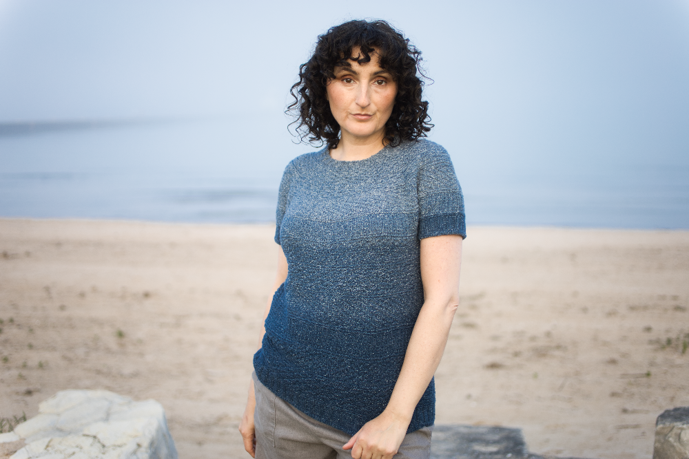

I started with a compact point-and-shoot digital camera, but I wasn't satisfied with the results.

So I bought a mirrorless interchangeable lens camera with full manual capabilities, and I took a year-long email photography course to learn how to use it.

I started to develop an eye for finding the right background scenery for each of my knit designs.

I bought a prime portrait lens, and then another, and experimented with blurred backgrounds and bokeh.

I used my past modeling experience to show off my knit creations

I scouted locations to find the best backgrounds to match my knitwear, and I watched the weather for the perfect, slightly overcast conditions.

With practice, I was able to consistently achieve the results I wanted.

What will the next step in my digital photography journey be?
Reflection